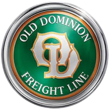
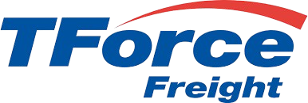
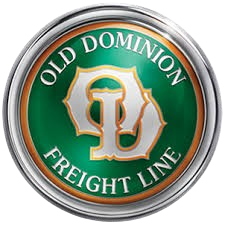
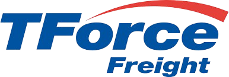
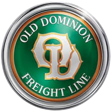
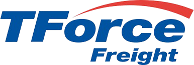

CARRIER TOOLS AND SOFTWARE PLATFORMS


 



Remote logistics support for US-based businesses handling LTL/FTL freight, carrier coordination, shipment tracking, and daily operations.
Book a Free Logistics Workflow Review


“My ops workload dropped by 60% overnight. He handles all carrier follow-ups and tracking—no more missed updates.”
— James R. (Freight Broker, TX)
“Finally, someone who understands LTL documentation and responds during US business hours. Game-changer.”
— Maria L. (Operations Manager, IL)
“He caught a double-billing error with a carrier that saved us $1,200. Proactive and detail-oriented.”
— David K. (Logistics Director, CA)
When shipments stall, costs rise, and owners get stuck in ops—growth stops. My remote support removes that friction.
Every hour spent on logistics coordination is an hour not spent scaling your business. Offload ops today to unlock growth tomorrow.
I’m not a general VA—I specialize in freight logistics. I speak the language of BOLs, PRO numbers, and carrier portals fluently.
If you’re a US-based business managing LTL/FTL shipments and drowning in emails, calls, and spreadsheets—you’re my ideal client.
“I was spending 3–4 hours daily just chasing carriers for updates. Since hiring my Freight VA, that time is back in my calendar. He proactively tracks every load and alerts me only when action is needed. My stress levels dropped dramatically.”
Sarah Mitchell (Owner, Midwest Distributor)
“We tried a general virtual assistant first—big mistake. They didn’t understand freight terms or systems. This Freight VA came in, learned our OMS in two days, and now manages all LTL coordination flawlessly during US business hours.”
Robert Chen (Operations Lead, E-commerce Brand)
“During a major supply chain disruption, my VA rerouted 3 critical FTL loads in under 2 hours. He stayed late, coordinated with 3PLs, and kept everything moving. That kind of reliability is worth every penny.”
Michael Torres (Logistics Manager, Manufacturing Co.)
“My VA maintains our master shipment tracker with 100% accuracy. No more ‘Where’s my load?’ calls from customers. Our on-time delivery rate improved from 87% to 96% in 8 weeks.”
Jennifer Walsh (Freight Broker, Florida)
“He handles all BOLs, invoices, and carrier confirmations—zero errors in 6 months. I finally trust that my back-office logistics are under control. Now I can focus on winning new clients.”
David Lin (Owner, Regional 3PL)
“From day one, He was proactive—sending pickup confirmations, flagging delayed carriers, and updating our ERP. It feels like I hired an in-house ops specialist—without the overhead.”
Lisa Thompson (COO, Retail Brand)
Deep knowledge of LTL/FTL operations, carrier communication protocols, and freight documentation—not generic admin work.
Available 8 AM–5 PM CST/EST. Real-time coordination with carriers, warehouses, and your team when it matters most.
Quickly adapts to your OMS, spreadsheets, CRMs, and freight portals. Fast learner with strong SOP adherence.
Consistent, proactive support. If a shipment needs attention, you’ll know—before it becomes a problem.
Overwhelmed, Reactive, Disorganized
Owner drowning in carrier calls, missed updates, scattered spreadsheets, and constant “Where’s my load?” emails from customers.
Organized, Proactive, Reliable
Dedicated VA handles all coordination, tracking, and documentation. Real-time updates, clean records, and owner free to grow the business.
Watch a short walkthrough of a mock LTL shipment quote comparing ESTES, TForce, and Old Dominion.
This breakdown shows how carrier selection, accessorials, and lane logic
can change shipping costs and how the right ops support prevents overpaying.
🎥 Watch the LTL Quote Comparison (2–3 min)
Why it matters:
Most companies overpay on LTL because no one has time to check alternatives. This is the kind of review that protects margins before the load moves.
Everything you need to know about working together.
Yes. I’m available 8 AM–5 PM Central/Eastern time, Monday through Friday. I align fully with US operational rhythms.
I’m experienced with Amazon Relay, ArcBest, Ascend TMS, DOFT, DAT, ESTES, FedEx, Old Dominion, TForce, and Trucker Path. I learn new systems quickly.
General VAs handle email, calendars, and basic tasks. I specialize in freight logistics—BOLs, carrier coordination, shipment tracking, LTL/FTL documentation, and urgent issue resolution. I speak your industry’s language.
While I work US business hours, I can accommodate occasional urgent requests with advance notice. For true 24/7 coverage, we can discuss a shared coverage model.
Book a free 30-minute workflow review. We’ll assess your current process, identify pain points, and design a support plan tailored to your needs—no obligation.
Let’s keep your shipments moving smoothly. Book your free logistics workflow review and discover how dedicated freight support can transform your operations.